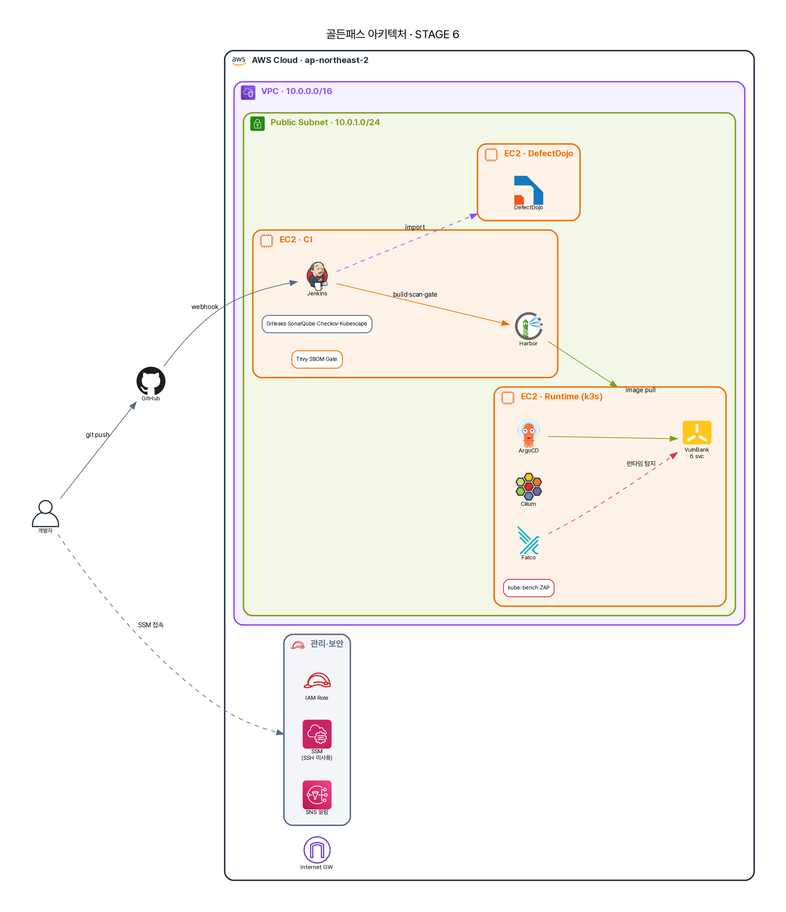

13화 · "보안팀은 이걸 어디서 봐요?"¶
12화까지, A는 모든 무기를 손에 넣었다. 그런데 보안팀장이 자리로 와서 던진 질문에, A는 답을 못 했다.
"지금 우리 결제 서비스 위험이 총 몇 건이야? 어제보다 나아졌어? 그 IDOR은 누가 언제까지 고치기로 했지? 그리고 — 같은 취약점을 Trivy랑 SBOM이 둘 다 잡았으면, 그거 두 건이야 한 건이야?"
A는 일곱 개 탭을 열었다. SonarQube, Gitleaks 리포트, Trivy JSON, ZAP 결과, Falco 로그, Hubble, 게이트 요약… 어디에도 "총 위험 N건, 담당자, 기한"을 한 화면으로 보여주는 곳은 없었다. 도구는 발견을 만든다. 그런데 보안팀이 필요한 건 발견이 아니라 관리다 — 중복 제거된 총량, 생애주기(열림→트리아지→수정→검증), 담당자, 기한, 추세.
A: "발견은 일곱 군데 있는데… 보안팀은 이걸 어디서 봐요?"
이게 마지막 빈틈이다. 그리고 가장 많은 조직이 빠지는 함정이다 — 도구는 잔뜩 깔았는데, 그 결과를 관리할 단일 평면이 없다.
도구는 발견을, DefectDojo는 관리를¶
1화에서 띄운 세 번째 VM, 기억하는가 — 증적용 DefectDojo. 12화 동안 비어 있던 그 VM이 여기서 일을 시작한다.
DefectDojo는 ASOC(Application Security Orchestration & Correlation) 도구다. 핵심은 이 프로젝트의 증적 문서에 적힌 한 줄에 있다 — "DefectDojo는 로그 저장소가 아니라 findings lifecycle 관리 도구다." 일곱 도구의 출력을 한곳에 빨아들여 중복을 합치고, 생애주기를 추적하고, 담당과 기한을 붙이고, 추세를 측정한다. 흩어진 발견을, 관리되는 위험으로 바꾼다.
연결의 비결은 — 또다시 2화의 REPORT_DIR 규약이다.
REPORT_DIR/gitleaks/*.json ─┐
REPORT_DIR/trivy/*.json ├─ scan_type별 import-scan API ─→ DefectDojo
REPORT_DIR/checkov/*.json │ (Product: VulnBank-MSA,
REPORT_DIR/sbom/*.cdx.json ─┘ Engagement: dev-build-N)
─── 측면 입력 ───
Falco · Hubble · DAST · SBOM 재평가(신규 CVE)
각 도구가 자기 칸에 떨군 JSON을, DefectDojo의 import-scan API가 도구별 파서(scan_type)로 읽어들인다. Gitleaks는 Gitleaks 파서로, Trivy는 Trivy 파서로, SBOM(CycloneDX)은 그 파서로. 2화에서 "새 도구는 자기 칸에 JSON만 쓰면 된다"던 그 느슨한 결합이, 여기서 증적 통합으로 결실을 맺는다 — 도구를 추가하면 DefectDojo 입수도 한 줄 늘 뿐이다.
같은 취약점을 두 도구가 잡으면 — 중복 제거¶
팀장의 까다로운 질문 — "Trivy랑 SBOM이 같은 CVE를 둘 다 잡았으면 한 건이야 두 건이야?" — 이 ASOC의 존재 이유다. DefectDojo는 중복 제거(deduplication)와 상관(correlation)을 한다. 같은 컴포넌트의 같은 CVE를 여러 스캔이 보고하면, 하나의 finding으로 합치고 어디서 발견됐는지만 여러 출처로 단다. 그래야 "우리 위험 총 N건"이 부풀려지지 않은 진짜 숫자가 된다. 도구 일곱 개의 합이 아니라, 중복을 걷어낸 실제 위험의 크기.
그리고 각 finding엔 생애주기가 붙는다. Active → 트리아지(진짜냐 오탐이냐) → 담당자 지정 → 수정 → 재검증 → Closed. 11·12화의 런타임 증적(Falco 웹쉘 경보, Hubble DROPPED)과 8화의 SBOM 신규 CVE도 측면 입력으로 합류한다. 빌드 타임 발견과 런타임 증적이 한 평면에서 만나는 것 — 이게 "단일 화면(single pane of glass)"의 진짜 의미다.
정직한 현재 위치¶
미화하지 말자. 이 PoC의 DefectDojo 통합은 완성형이 아니다. 증적 문서가 정직하게 적고 있다 — 전용 VM에서 Gitleaks·Trivy·Checkov·SBOM(CycloneDX) import는 동작하지만(별도 Jenkins job), 메인 파이프라인으로의 import 스테이지 통합과 SonarQube API import는 진행 중이다. 즉 "되는 것"과 "되게 하는 중인 것"이 섞여 있다. 그걸 섞어서 다 된다고 말하지 않는 것이, 이 교본이 처음부터 지킨 약속이다.
더 근본적인 한계 — DefectDojo는 아무것도 새로 찾지 않는다. 입수한 것만 보여준다. 들어온 게 쓰레기면 나가는 것도 쓰레기다(garbage in, garbage out). 파서·중복 규칙을 잘못 잡으면 진짜 위험이 중복으로 묻히거나 오탐이 부풀려진다. 그리고 결국 — DefectDojo가 보여주는 "위험 N건"을 누가 매일 보고, 누가 트리아지하고, 누가 기한을 지키는지가 없으면 그건 그냥 예쁜 대시보드다. 도구가 관리를 가능하게 하지, 관리를 대신하진 않는다.
그렇다면 그 사이 — DefectDojo가 다 받아주기 전 — 오탐과 위험 수용은 어디에 어떻게 쌓이나? 이 PoC는 게이트 단계에 코드화된 예외 레지스터(근거·승인자·만료일이 git으로 버전관리되고, 만료되면 자동으로 다시 차단되는)를 두어 그 빈자리를 메웠다. 그 구조와 실측 증적은 예외·오탐 처리 구조에 따로 정리했다.
A가 정리한 자리들¶
기술적으로 DefectDojo는 REPORT_DIR 규약을 타고 일곱 도구의 출력을 scan_type별 파서로 입수해, 중복 제거·상관·생애주기 추적으로 흩어진 발견을 관리되는 위험으로 통합한다 — 빌드 타임과 런타임 증적이 한 평면에서 만난다. 규제로 옮기면, 이 단일 평면은 ISMS-P 2.11(취약점 관리의 지속적 운영)과 2.9(로그·증적 관리)를 충족하고, "발견→조치→검증"의 추적 가능성은 감사와 경영 보고의 핵심 산출물이 된다. 정책의 영역에서, 심각도별 조치 SLA(예: Critical 7일, High 30일)와 오탐 처리 규칙이 정책이 되고 DefectDojo가 그 SLA 준수 여부를 측정한다. 그리고 관리의 영역 — 이 장은 그 자체로 거버넌스의 도구다. 그동안 매 장 끝 '관리' 렌즈에서 말한 "누가 위험을 소유하고 추적하는가"의 답이, 바로 이 단일 평면이다. 위험의 총량·추세·담당·기한이 한 화면에 모일 때, 비로소 보안은 도구의 집합이 아니라 관리되는 프로그램이 된다.
A가 13화에서 얻은 문장. 도구는 위험을 발견하고, DefectDojo는 위험을 경영한다.

처음과 끝¶
1화의 빈 VM 세 대가, 13화 만에 위 그림이 됐다. terraform이 작업장을 세우고, 파이프라인이 일곱 도구를 엮고, 게이트가 정책을 집행하고, GitOps가 충실히 배포하고, Cilium·Falco가 런타임을 지키고, DefectDojo가 모든 위험을 한 화면에 모은다. A는 이제 금요일 밤의 그 질문 앞에 설 수 있다.
다음 → 에필로그 · "그래서, axios를 막나요?" — 13화를 통과한 A의, 정직한 결론